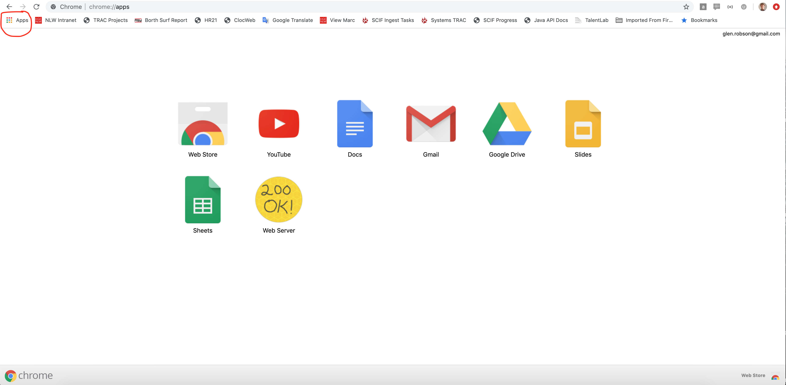

Generating static tiles
As mentioned in the previous chapter, the IIIF Image API defines the following structure:
http://host:port/identifier/region/size/rotation/quality.format
It is possible to generate images that fit this URL structure and conform to the IIIF Image API using a tile generator. This will generate the minimum required amount of files to implement the IIIF Image API. It does have some limitations, the main one being it is not possible to request images of a size that haven't been pre-generated. This type of pre-generated IIIF Image is known as a Level 0 implementation.
To generate these IIIF images we are going to use a IIIF tilling program which is available on Github.
Step 1: Download the IIIF Tiler
- Navigate to the release page: https://github.com/glenrobson/iiif-tiler/releases
- Click the
assetsdrop down - Download iiif-tiler.jar
- Store this jar file in your
iiif-workshopdirectory
Step 2: Prepare your image files
- Move the image files you want to work with into your
iiif-workshopdirectory
Step 3: Generate the IIIF Image tiles
Either:
- Drag an image on to the iiif-tiler.jar in the Finder or Windows interface.
or
- from the command line run:
java -jar iiif-tiler.jar images/67352ccc-d1b0-11e1-89ae-279075081939.jpg
- Both options will generate the IIIF tiles in a
iiifdirectory.
Step 4: Point the Chrome webserver to your iiif-workshop directory
- Open Chrome
- Click the Apps button on the top left

- Click on the
Web Server(if this is not listed ensure you have installed the prerequisites). - You should see the following:

- Click
choose folderand select youriiif-workshopfolder - Where it says
Enter portchange it to 8887 - Click
Show Advanced Settings - Ensure
Set CORS headershas a tick next to it.
Step 5: Serve your IIIF Image through a http server
- Open a browser and navigate to http://127.0.0.1:8887/
- You should see a
iiifdirectory and if you click that you should see your image file. - Click this directory then click on the
info.json. - If your image was called picture.png the URL should be.
http://127.0.0.1:8887/iiif/picture/info.json
- If you see the info.json you are now ready to view your image in a IIIF Image viewer.
Step 6: Show your image in a IIIF Viewer
You can now load your image to a IIIF image viewer. The main image viewer is OpenseaDragon. This takes the URL of the info.json. So if your info.json URL is:
http://127.0.0.1:8887/iiif/picture/info.json
Open it with OpenseaDragon: